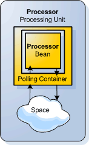
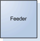
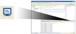

Tutorial summary: Learn how to create and run a Processing Unit - a scalable unit of deployment, inside your development environment. Learn how to use the GigaSpaces basic API, by implementing a simple processor and feeder application. Approx 10 min
Overview
Example Folder - Sample application is located in <GigaSpaces Root>\examples\helloworld
 Features Introduced - Space, GigaSpaces API, Processing Unit, Polling Container, Running inside the IDE.
Features Introduced - Space, GigaSpaces API, Processing Unit, Polling Container, Running inside the IDE.
Before you begin
We recommend that you go through the following steps before you begin this tutorial:
- Download GigaSpaces and set up your development environment
to work with GigaSpaces - this is needed to run the sample application described in this tutorial. - Step One - Using Processing Units For Scaling
- a short, one page introduction to scaling your application, using Processing Units - Recommended.
Goals
Create a scalable processor application (a Processing Unit) that processes objects as they are written to the space (data grid). Create a feeder application that feeds objects to the space (data grid) for the processor to read and process.
Contents
- The Message class to be fed and processed.
- The simple scalable processor application.
- The feeder application.
- Running the processor inside your IDE.
- Running the feeder inside your IDE.
- Expected output
Components
There are two components in our scenario:
|
 |
2. Feeder - an application that feeds unprocessed Message objects to the Space, and after a certain period of time, counts and reads one of them at random. blank-line 3. Message Object - a simple POJO with an id and info attributes. |
 blank-line |
blank-line
 Jump ahead and run the sample application, in case you want to see the final outcome of this tutorial now
Jump ahead and run the sample application, in case you want to see the final outcome of this tutorial now
Code Walkthrough
First let's take a look at the Message object that is being written to the space by the feeder application:
The Message Object (Message.java)
This is a simple POJO containing two attributes: id, which represents the object id, and info, which represents the information that this object holds. Both have setter and getter methods.
 The getter for the id attribute is annotated with the @SpaceRouting annotation that is used to route Message objects when they are written to the space. This is necessary for scaling the application, and will be explained in the next tutorial. For now, just remember that this annotation should decorate one of the object's properties.
The getter for the id attribute is annotated with the @SpaceRouting annotation that is used to route Message objects when they are written to the space. This is necessary for scaling the application, and will be explained in the next tutorial. For now, just remember that this annotation should decorate one of the object's properties.
private Integer id; // object id public void setId(Integer id) { this.id = id; } @SpaceRouting public Integer getId() { return id; }
private String info; // info represents the info the object holds public String getInfo() { return info; } public void setInfo(String info) { this.info = info; }
A necessary default empty constructor and another constructor to construct
a new Message object with a given id and info:
public Message() { // Mandatory empty constructor } public Message(Integer id, String info) { this.id = id; this.info = info; }
Next, let's take a look at the Processor Processing Unit.
The Processor Processing Unit (pu.xml, Processor.java)
The Processor Processing Unit contains two components: a space (cache), which holds objects in memory, and a processor bean that takes, modifies and writes objects back to this space.
Processor Processing Unit Configuration (META-INF/spring/pu.xml)
A Processing Unit always has an XML file called pu.xml, that resides under the META-INF\spring directory.
In fact, this is a standard Spring framework XML configuration file, with a number of custom GigaSpaces specific tags. Let's take a look at this file. In our example there are 3 main components contained within the Processing Unit:
- The first component is a space (cache) instance embedded inside the Processing Unit, named processorSpace. It has a URL property.
On the second line, we define a transaction manager, which is referencing this space, and manages its transactions.
Finally a bean called gigaSpace wraps the space, and provides a simple client API to interact with it, as we will see later in this tutorial.<os-core:space id="space" url="/./processorSpace" /> <os-core:local-tx-manager id="transactionManager" space="space"/> <os-core:giga-space id="gigaSpace" space="space" tx-manager="transactionManager"/>
- The second component is a helloProcessor Bean, which contains the method that does the actual processing. This bean is defined in the Processor.java source file, which is shown in the next section.
<bean id="helloProcessor" class="org.openspaces.example.helloworld.processor.Processor"/>
The third, key component in this workflow is the Polling Container, which continuously removes (takes) objects matching certain criteria from the space. The criteria are expressed in the form of a template object (also known as example object). In our case, the polling container is instructed to take objects of type Message. However, it does not take all instances of the Message class, only those whose "info" property equals the string "Hello ". When a match is found, the object is taken and passed to a listener bean - here the listener is the previously defined Processor bean. This bean has a method annotated with the @SpaceDataEvent annotation, which is invoked with the taken object as a parameter. It returns a processed Message object, which is written back to the space by the Polling Container.
<os-events:polling-container id="helloProcessorPollingEventContainer" giga-space="gigaSpace"> <os-events:tx-support tx-manager="transactionManager"/> <os-core:template> <bean class="org.openspaces.example.helloworld.common.Message"> <property name="info" value="Hello "/> </bean> </os-core:template> <os-events:listener> <os-events:annotation-adapter> <os-events:delegate ref="helloProcessor"/> </os-events:annotation-adapter> </os-events:listener> </os-events:polling-container>
Next we'll see the source code for the Processor bean.
Processor Bean (Processor.java)
We saw that the pu.xml file defines a bean called Processor. Now let's look at this bean's source code.
It has one method. The primary method, processMessage(), is annotated with the @SpaceDataEvent annotation. Previously we saw that the Processor bean is referenced by the Polling Container and acts as its listener. When a Message object is taken from the space by the Polling Container, this method is invoked with the object as an argument. It returns a processed object. In this example it simply adds the "World !!" string to the object's info property:
public class Processor { @SpaceDataEvent public Message processMessage(Message msg) { System.out.println("Processor PROCESSING : " + msg); msg.setInfo(msg.getInfo()+"World !!"); return msg; } public Processor(){ System.out.println("Processor instantiated..."); } }
Now we are ready to view feeder application that feeds Message objects to the space.
blank-line
The Feeder Application (Feeder.java)
The feeder main method constructs a new Feeder instance, and passes the space URL to it, to connect to the space.
Each space is identified uniquely by its name. In the processor processing unit, we defined the space with the URL "/./processorSpace", which means an embedded space named "processorSpace". Therefore the URL the feeder uses to connect to the space, is "jini:///processorSpace". Without getting into the details, it means that the Jini protocol is used to discover a space named "processorSpace" in the network. It is passed to the feeder as a program argument.
We then start writing the Message object to the space and then read the results from it.
public static void main(String [] args) { if(args.length==0){ System.out.println("Usage: java Feeder <space URL>"); System.exit(1); } Feeder feeder = new Feeder (args[0]); // create the feeder and connect it to the space feeder.feed(1000); // run the feeder (start feeding) feeder.readResults(); // read back results }
Here's the constructor of the Feeder connects to the Processor Processing unit Space by using the input URL:
public Feeder(String url){ // Connect to a space using the url IJSpace space = new UrlSpaceConfigurer(url).space(); // Wrap the space with the gigaSpace API this.gigaSpace = new GigaSpaceConfigurer(space).gigaSpace(); }
The feed() method loops and writes Message objects to the space by using the gigaSpace.write() method:
public void feed(int numberOfMessages){ for(int counter=0;counter<numberOfMessages;counter++){ Message msg = new Message(counter, "Hello "); gigaSpace.write(msg); } System.out.println("FEEDER WROTE " + numberOfMessages + " messages"); }
Here's how all processed objects are read from the space, using template matching. The number of processed objects in the space (all of them should have their info property set to "Hello World !!") is then printed out:
public void readResults(){ Message template = new Message(); // Create a template to read a Message with info template.setInfo("Hello World !!"); // attribute that equals "Hello World !!" // Read an object matching the template System.out.println("Here is one of them printed out: "+gigaSpace.read(template)); //wait 100 millis for all to be processed: try{ Thread.sleep(100); }catch(InterruptedException ie){ /*do nothing*/} // Count number of objects in the space matching the template int numInSpace=gigaSpace.count(template); System.out.println("There are "+numInSpace+" processed Message objects in the space now."); }
Next, we compile and run the sample application
Compiling and Running the Application within your IDE
 Steps to run the application inside Eclipse IDE:
Steps to run the application inside Eclipse IDE:
If you haven't already done so,
download GigaSpaces and set up your development environment
- This is needed for running the tutorial sample application.
Importing the project into Eclipse
- Import the hello-common, hello-processor and hello-feeder projects located under the <GigaSpaces Root>/examples/helloworld folder.
(After importing, you'll see some errors since the GS_HOME path variable is not set yet)
How do I do that...blank-line
Importing the sample projects into the IDE
blank-line
- Start Eclipse. A Workspace Launcher Dialog appears.
- Write a new workspace name or select one of your existing workspaces, and click the OK button.
- To import the project, select File > Import ... to open the import dialog
- Select Existing projects into workspace and click Next to open the import project dialog
- In the Select root directory field click the Browse button to open the browse dialog
- Select the folder /examples/helloworld and click OK
- Make sure all 3 projects are selected: hello-common, hello-processor and hello-feeder
- Click Finish
blank-line
Hide details
blank-line
- Create a new Eclipse environment variable called GS_HOME, and point it to your GigaSpaces installation Root folder
How do I do that...blank-line
Setting an environment variable pointing to the GigaSpaces root folder
blank-line
- Right Click on the hello-common project in the Package Explorer tab to open the context menu
- Select Build Path > Configure Build Path... to open the Java Build Path dialog
- Select the Libraries tab and click the Add Variable... button to open the New Variable Classpath Entry dialog
- Click the Configure Variables... button to open the Classpath Variables dialog
- Click the New... button to open the New Variable Entry dialog
- In the Name field write GS_HOME to name the variable
- Click the Folder... button and browse to your GigaSpaces installation root folder
- Select your GigaSpaces installation root folder and click OK
- Click OK and OK again
- Click Yes to do full rebuild
- Close remaining dialogs
blank-line
Hide details
blank-line
| Make sure your project includes the latest Spring libraries located at <GigaSpaces Root>\lib\required folder. |
3. From the toolbar at the top of the screen, select Run > Run Dialog... to open the Run dialog
4. Click the + to the left of Java Application, to unfold it
5. Select the Hello Processor launch configuration, and click the Run button
Waiting for the Processor to instantiate
6. Before running the feeder, you should wait for the following output to appear in the Console tab at the bottom of the screen:
Processor instantiated, waiting for messages feed...
This indicates the Processor is up and running
7. From the toolbar at the top of the screen, select Run > Run Dialog... to open the Run dialog again
8. Click the + left to Java Application, to unfold it
9. Select the Hello Feeder launch configuration
10. Click the Run button
blank-line
Expected output
Running the processor and the feeder results in the following output, which can be viewed in the Console tab at the bottom of the screen.
Use the Display Selected Console button  to switch between the feeder and processor output consoles
Feeder expected output
The feeder starts, writes 100 message objects to the space, reads and prints one of them at random, and finally prints the number of processed messages in the space:
Starting the Feeder (Will wait for the space to initialize first...) FEEDER WROTE 1000 objects Here is one of them printed out: id[47] info[Hello World !!] There are 841 processed Message objects in the space now. Press any key to continue . . .
blank-line
Processor expected output
The processor prints the id and info attributes for each messages it takes for processing:
Processor PROCESSING : id[445] info[Hello ] Processor PROCESSING : id[904] info[Hello ] Processor PROCESSING : id[896] info[Hello ] Processor PROCESSING : id[446] info[Hello ] Processor PROCESSING : id[889] info[Hello ] . . . Processor PROCESSING : id[893] info[Hello ] Processor PROCESSING : id[905] info[Hello ] Processor PROCESSING : id[897] info[Hello ] Processor PROCESSING : id[875] info[Hello ] Processor PROCESSING : id[900] info[Hello ]
blank-line
What's Next?
Step three - Deploying the Hello World Application onto the Service Grid - shows how to deploy our application onto the grid, to gain fail-over, recovery and self healing capabilities.
Or return to the Quick Start Guide.